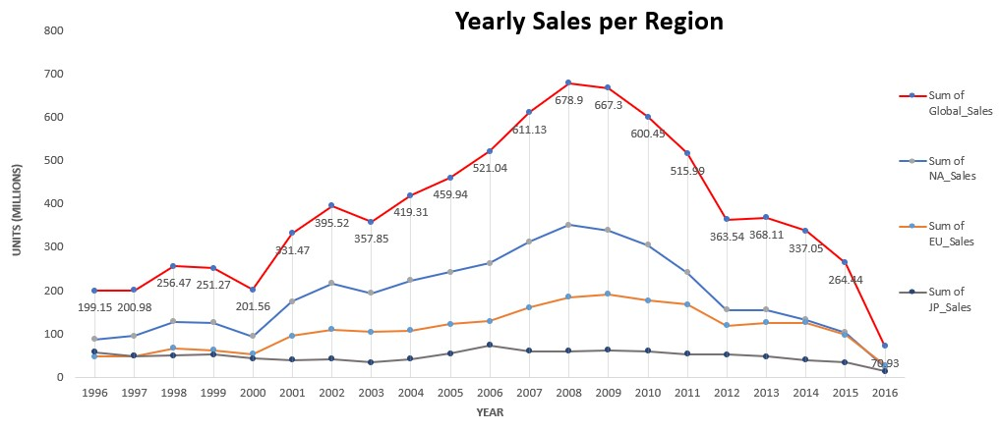
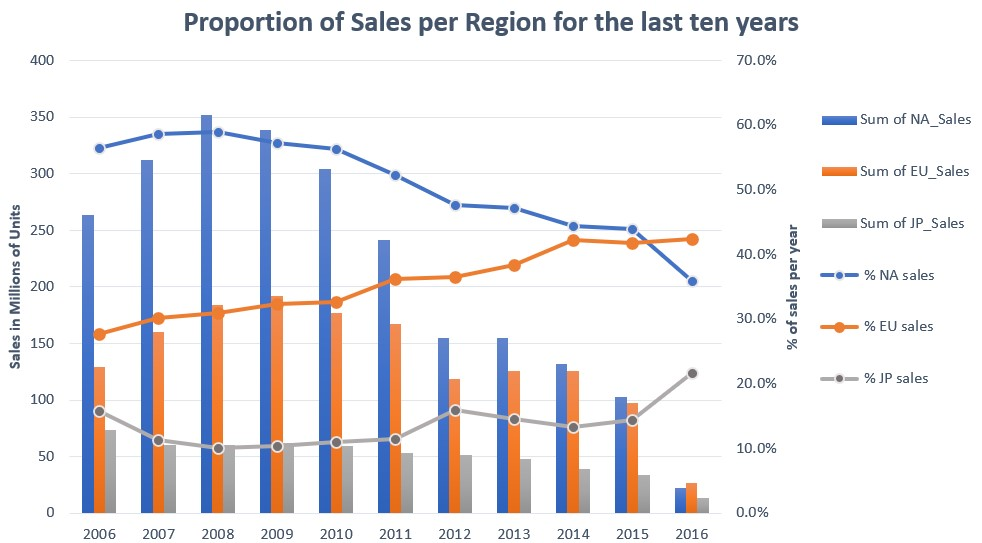

GameCo, Video Game Company - Excel Project

Background:
Games Co’s, a new video game company, understanding of sales is that the various geographic regions have stayed the same over time. Whether this is the case or not, the marketing budget needs to be redistributed among the regions in order to maximize return on investment.
Objective
As a Data Analyst working for GameCo’s, I should perform a descriptive analysis of a video game data set to give a recommendation of how budget should be allocated.
Goal
Create a presentation that includes visualizations telling the analytical story.
Dataset
Historical sales of video games (for games that sold more than 100,000 copies) spanning different platforms, genres, and publishing studios. Source: VGChartz and link
First step- Data Exploration and Data Cleaning
getting acquainted with the data by doing aggregations through pivot tables, identifying data limitations (bias), performing data quality and accuracy checks (inconsistent formatting, duplicates, missing values).
| Step | Description |
|---|---|
| 1 | Getting acquainted with the data by doing aggregations through pivot tables and table calculations |
| 2 | Identifying data limitations (bias) |
| 3 | Performing data quality and accuracy checks (inconsistent formatting, duplicates, missing values) |
Second step- Data Analytics
Perform histograms, bar charts, box and whisker plots, and scatter plots to compare data and discard outliers that affect the main statistics.
Third Step- Insights and Data Visualization
As opposed to what the company was expecting, sales across the main regions (North America, European Union, and Japan) have not remain the same. Overall, the industry’s sales are declining since year 2009. It is important to bear in mind that the data is biased towards retail sales and do not capture accurately the market of software sales, which in turn could depict a different behavior.
To get a better idea on how to assign the budget, we looked down into the last ten years to show the relevance per region. We can see that the proportion of sales from EU is gaining track and even surpassing that of NA in 2016. However, in absolute values, NA remains the market with the highest sales for all the remaining years.
Final Recommendations
- Given that the Marketing Budget should aim to maximize return on Investment (ROI), GameCo should also perform an analysis that includes variables such as profit by genre, profit by region and cost structure of games per genre before defining the final budget. On the same line, this suggested budget should be aligned to the Sales Forescast for year 2017.
- It is advisable to investigate the competitive landscape before setting the final budget. For example, in North America the Shooter genre concentrates 70% of its sales in just two companies. Therefore, any efforts to allocate budget in that region for Shooter games could be offset by fierce competition. Whether this is true, is better to revise if new genres may well be more attractive to compete in.